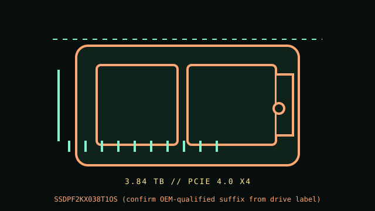

[ PCIE 4.0 NVME // IDENTIFIED PRODUCT ]
Solidigm D7-P5520 3.84 TB U.2 (SSDPF2KX038T1OS)
Product-specific catalog record for the manufacturer code below. Performance figures are manufacturer-rated values, not independent test results.

IDENTIFY THE EXACT SKU: Compare the full MPN, label suffix, form factor, firmware and any OEM/security code before applying these notes. Family variations, capacity changes and factory thermal assemblies can materially change ratings and compatibility.
Manufacturer-identified specifications
| Product / MPN | Solidigm D7-P5520 3.84 TB U.2 (SSDPF2KX038T1OS) — SSDPF2KX038T1OS (confirm OEM-qualified suffix from drive label) |
|---|---|
| Capacity / form factor | 3.84 TB; 2.5-inch U.2, 15 mm enterprise drive. |
| Interface / lane width | PCIe 4.0 x4. |
| Protocol | NVMe 1.4. |
| Rated performance / endurance | Up to 7,100 MB/s sequential read and 4,200 MB/s sequential write for the 3.84 TB U.2 class. Capacity-specific endurance is not repeated here because OEM/order-code suffix and SKU datasheet line must be checked against the installed unit. |
| Heatsink / revision caveat | 15 mm U.2 enterprise enclosure, requiring a qualified NVMe backplane/carrier and server airflow; not for SATA/SAS-only 2.5-inch bays. Solidigm D7-P5520 is a data-center family; the product brief distinguishes capacities and form factors, while server OEM suffixes can indicate firmware/security qualification. Check the full printed label and system vendor compatibility list. |
Compatibility, installation & service
- Confirm the server/backplane routes PCIe x4 NVMe and supports this 15 mm U.2 model, carrier, firmware and boot configuration. Do not rely on a SATA/SAS connector lookalike. Follow hot-swap protocol only if supported by the platform/controller/OS; unmount or quiesce data first. Record SMART/NVMe health, serial and firmware, back up and follow array rebuild procedure.
- Solidigm D7-P5520 is a data-center family; the product brief distinguishes capacities and form factors, while server OEM suffixes can indicate firmware/security qualification. Check the full printed label and system vendor compatibility list.
- Confirm host boot mode, OS NVMe support, CPU lane generation, socket length/keying, power and controller/backplane qualification from the system manual; physical fit alone does not establish compatibility.
- Before drive replacement, check backup integrity, encryption keys, firmware settings, recovery media and array rebuild plans. Use electrostatic-discharge precautions and never hot-remove unless the host documentation explicitly supports it.
Manufacturer references
- Solidigm D7-P5520 — manufacturer product page and linked product briefManufacturer specification/product reference. Verify the precise SKU and its capacity-specific table, manual or linked downloads against the installed drive label.
- NVM Express — specificationsProtocol standards reference; it does not establish product-specific features or host boot support.
- PCI-SIG — PCI Express specificationsInterface generation/lanes standards reference, not a substitute for the host motherboard/server manual.
Manufacturer peak ratings reflect stated test conditions and may not represent sustained writes in a thermally constrained or cache-exhausted host. Confirm current regional support, service status and warranty terms before use.